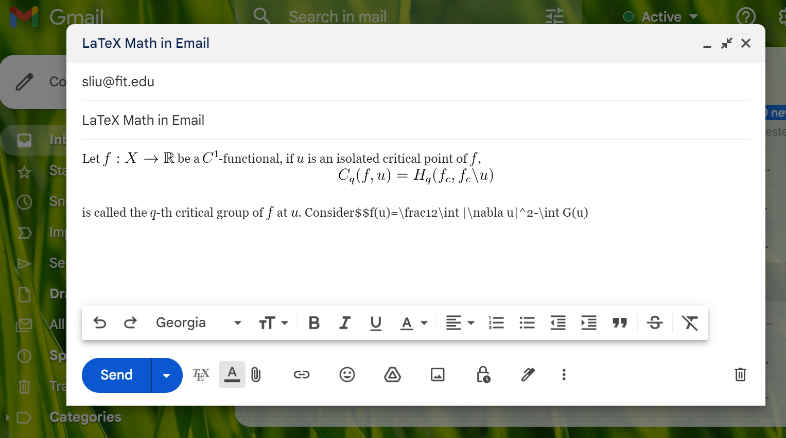
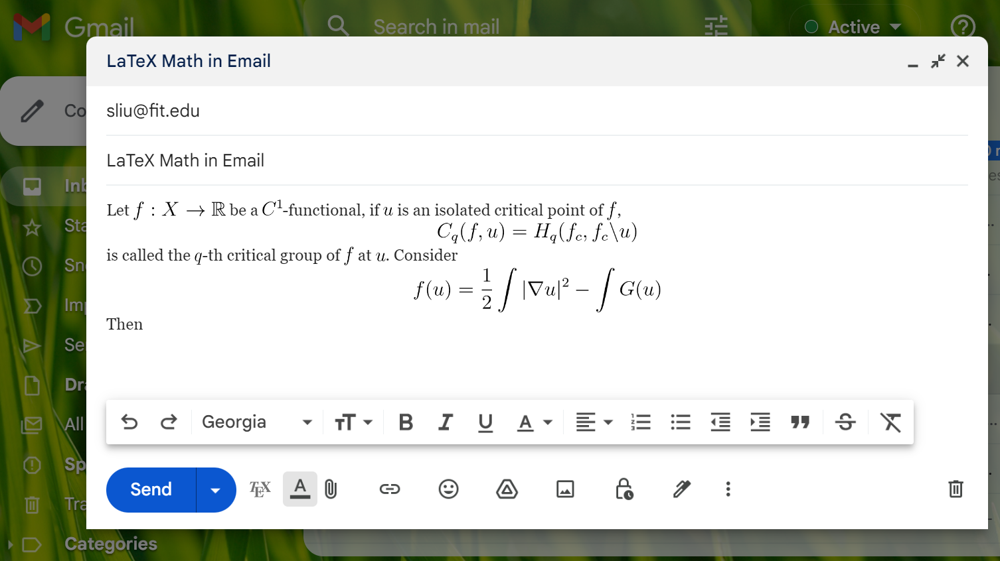
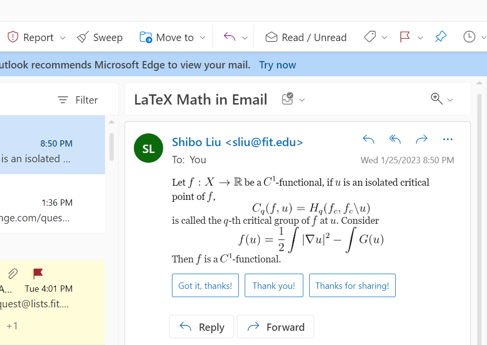
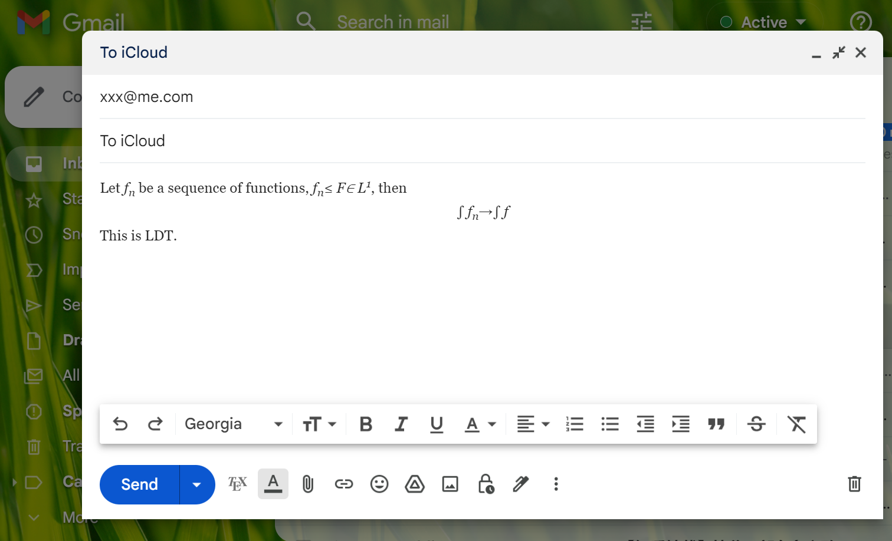
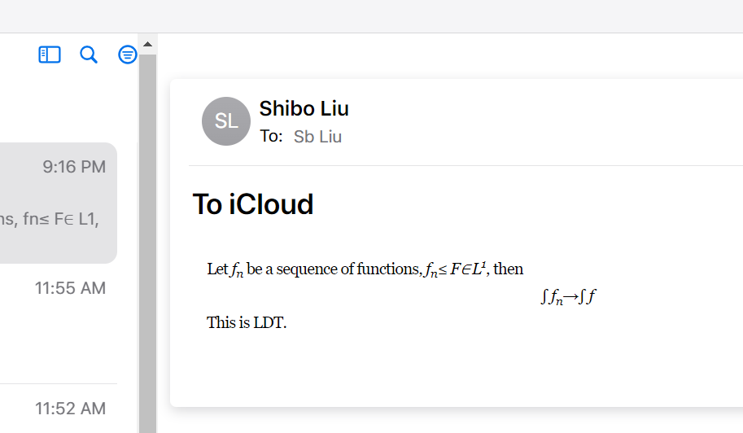

We know that in Gmail, we can compose math formulas via LaTeX, provided you have install the “TeX for Gmail” addon in Chrome. How to send emails containing math formula from an arbitrary email account (such as sliu@fit.edu)? I have an idea.
Login Gmail in Chrome, after filling your non-Gmail email address (such as sliu@fit.edu) from where you want to send the email, move to the area for composing the text of your email and press Shift + F8 button. Now you can compose your email using LaTeX code. When you complete a pair of $ or $$, the codes will be converted into math formula automatically, as demonstrated below:


When you have composed the email, press the Send button sending this email to the non-Gmail email address (for example sliu@fit.edu, as shown above). Then, login to that email account, forward the email to the desired recipient (maybe you need to deletet “Fw” in the Subject line, and other redundant information at the beginning of the email). The recipient will receive your email containing beautiful math formulas.
The following figure shows the email with math formulas received by the third party (the desired recipient). You can see that it was sent from sliu@fit.edu, not from Gmail.

Some email service (such as iCloud of Apple) does not support displaying the picture of the formulas. If your recipient use this kind of email address, instead of pressing Shift + F8, you should press Shift + F9 to use the “Simple math” mode, which can be supported in all known email service with poorer quality:
Composing the email in Gmail (with Shift + F9), that will be sent to Apple iCloud email address:

The email received in Apple iCloud email:
